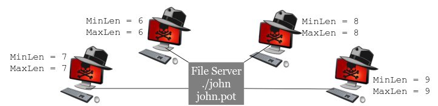
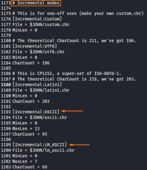

Distribuited Cracking
John the Ripper does support parallel password cracking across multiple CPUs or multiple machines via the OpenMP (Open Multi-Processing) API and the MPI (Message Passing Interface) distributed architecture.
We could have multiple instances of John work on the same password by having each target a different potential password length. We could have one John instance working on passwords of N characters, another on N+1, another on N+2, and so on.
In the John configuration file (john.conf on Linux/UNIX systems and john.ini on Windows), there is a section for Incremental mode cracking, specified with the "[Incremental:" header in the file. For the All, Alpha, Digits, and Alnum (alphanumeric) sections of the file, we could specify a MinLen = N and a MaxLen = N. With the same N, that instance of John will make guesses of only that length.
 Then each John instance could run out of a single mounted file share (using Windows file sharing, SAMBA, NFS, or another sharing mechanism) on each of the cracking machines, storing their results in the exact same john.pot file.
Multiple instances of John can do this, provided that you launch each John with a different session identifier string, using --session=[string] at the command line. Then just monitor this john.pot file for the answer when it is eventually cracked.